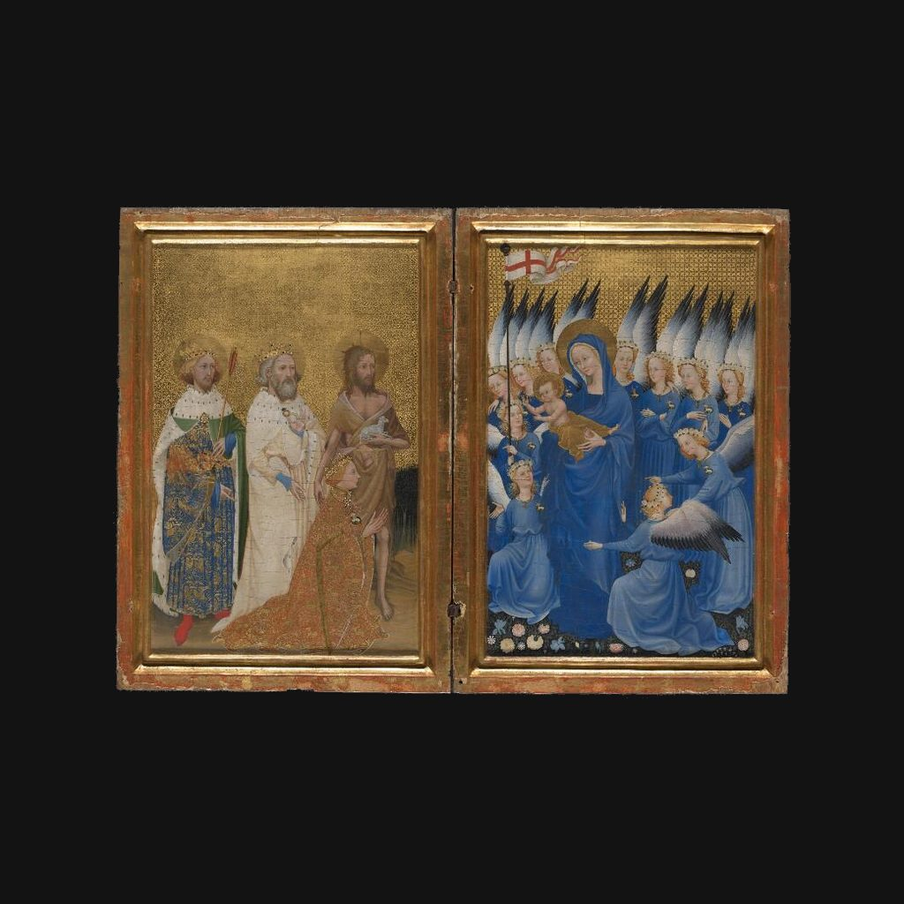

威爾頓雙聯畫
佚名 · 英國或法國畫家 · 約1395—1399年
The Wilton Diptych
解說節錄
一群藍衣天使站在花地上，衣袍上竟佩著國王的白鹿徽章。
這是《威爾頓雙聯畫》，大約畫於一三九五年到一三九九年，可能出自英國或法國畫家之手。它用蛋彩畫在橡木板上，兩扇各自連著原來的畫框，約五十三乘三十七公分，裡面的畫面約四十六乘二十九公分。兩塊板用鉸鏈相連，能像書一樣合起來。
— 國語講稿 · Artvery
完整解說約 3 分鐘，在 Artvery App 裡收聽。國語、粵語、內地普通話三種語音，館內對準作品即可辨識播放。
即將上架 App Store
App 即將上架，敬請期待。上架後免費下載，每座博物館單獨購買，一次購買永久使用。
作品資訊
- 文化
- 佚名 · 英國或法國畫家
- 年代
- 約1395—1399年
- 尺寸
- 53 × 37 公分
- 位置
- 英國國家藝廊 · 塞恩斯伯里翼：早期文藝復興
- 館藏編號
- NG4451
英國國家藝廊參觀攻略：必看名作與路線 · 英國國家藝廊中文語音導覽